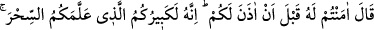
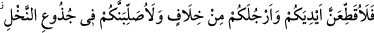
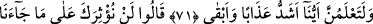
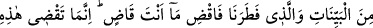
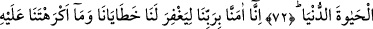
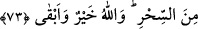

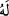
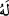
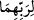
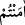
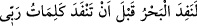
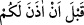
ALLAH CEZASI
EN SÜREKLİ OLANDIR
71. (Fir’avn) Şöyle dedi: “Ben size izin vermeden önce ona inandınız öyle mi!
Hakikat şu ki o, size büyü öğreten ulunuzdur. Şimdi elleriniz ile ayaklarınızı
tereddüt etmeden çaprazlama keseceğim ve sizi hurma dallarına asacağım!
Böylece, hangimizin azabının daha şiddetli ve sürekli olduğunu iyice
anlayacaksınız.”
72. Dediler ki: “Seni, bize gelen açık açık mucizelere ve bizi yaratana tercih
edemeyiz. Öyle ise yapacağını yap! Sen, ancak bu dünya hayatında hükmünü
geçirebilirsin.
73. Bize, hatalarımızı ve senin bize zorla yaptırdığın büyüyü bağışlaması için
Rabbimize îmân ettik. Allah, (mükâfatı) en hayırlı ve (cezası) en sürekli olandır.”
Fir’avn sihirbazları tehdid ederek “şöyle dedi: “Ben size izin vermeden önce ona
inandınız öyle mi?”
Âyetteki “ (ona)” yâni Mûsâ’ya demektir. Bahru’l-ulûm’da ise şöyle der: “ (Ona)”,
“__WORD__ (o ikisinin rabbine)” demektir. Buradaki “lehû”, “bihî” anlamındadır. Bunun kesin
delîli ise şu âyettir: “Fir’avn; “Ben size izin vermeden ona inandınız öyle mi?”
dedi.” (el-A‘râf, 7/123)
“__WORD__ ifâdesi, onları azarlamak için ‘demek siz bu fiili yaptınız öyle mi?’
anlamındadır.
“
“…Rabb’imin sözleri tükenmeden önce deniz tükenir...”
(el-Kehf, 18/109) âyetinde de olduğu gibi buradaki “__WORD__ ifâdesinin anlamı,
‘Ben ona inanmanıza izin vermeden ve bunu size emretmeden’ demektir. Çünkü bu
ifâdeden onlara daha sonra izin verileceği veyâ izin verilmesinin beklendiği mânâsı
çıkmaz. Bir konuda izin vermek, onu yapmanın câiz olduğunu bildirmektir.